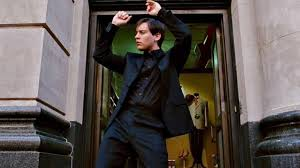

Lets know about Andrew Garfield
Initially lets know about Tobie Maguire !
⭐ Tobey Maguire – Brief Overview
Tobey Maguire (full name: Tobias Vincent Maguire) is an American actor and film producer, best known for playing Spider-Man in Sam Raimi’s original Spider-Man Trilogy (2002–2007). He is widely praised for bringing emotional depth, innocence, and relatability to the role of Peter Parker.
🎬 Career Highlights
1. Spider-Man Trilogy (2002–2007)
Spider-Man (2002)
Spider-Man 2 (2004)
Spider-Man 3 (2007)
These movies made him globally famous and set the foundation for modern superhero cinema.
2. Other Major Films
The Great Gatsby (2013) – played Nick Carraway
Brothers (2009) – critically acclaimed performance
Seabiscuit (2003) – Oscar-nominated film
Pleasantville (1998)

watch spiderman movie english
Now lets know about our Amazing spiderman!
Andrew Garfield – Brief Overview
Andrew Russell Garfield is an English–American actor known for his emotional depth and powerful performances. He became globally famous for playing Spider-Man in The Amazing Spider-Man series (2012–2014). Fans love him for his charm, humor, and energetic version of Peter Parker.
Andrew Russell Garfield is an English–American actor best known for playing Spider-Man in The Amazing Spider-Man films (2012 and 2014). He is widely loved for his energetic, witty, and emotional portrayal of Peter Parker, which many fans feel closely matches the comic style. Beyond Spider-Man, he has delivered powerful performances in acclaimed movies such as Hacksaw Ridge (2016), where he earned an Oscar nomination, The Social Network (2010) as Eduardo Saverin, Tick, Tick… Boom! (2021) which won him a Golden Globe, as well as Silence (2016) and several strong theatre roles. Known for his thoughtful, expressive personality and deep connection with his characters, Andrew Garfield returned to the role of Spider-Man in No Way Home (2021), giving fans an emotional and memorable comeback.

Movie links
Watch These movies
watch amazing spiderman movie english